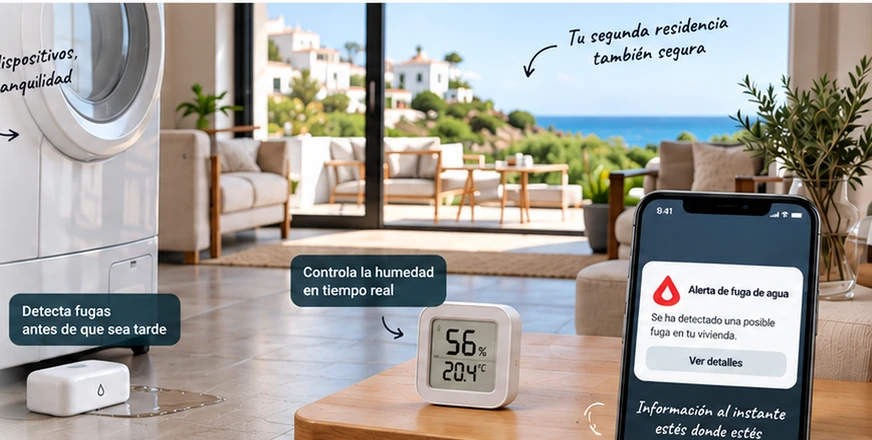
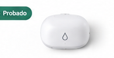
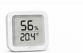
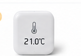
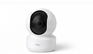
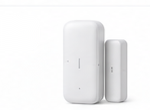

Tu casa bajo control,
estés donde estés.
Probamos y comparamos productos para detectar fugas, humedad, temperatura y otros problemas antes de que sea tarde.
y sin rodeos
para instalar y usar
habitual o segunda residencia
Comparativas destacadas

ProbadoMejores detectores de fugas
de agua
Comparativa de los modelos más fiables
y con mejor relación calidad-precio.

AnalizadoMejores sensores de humedad
Evita el moho y protege tu vivienda
con estos sensores.

RecomendadoMejores sensores de temperatura
Mantén el control, incluso en invierno,
aunque no estés en casa.

ProbadoMejores cámaras para
segunda residencia
Vigila tu casa desde el móvil con
las opciones más recomendadas.

AnalizadoMejores sensores de puertas
y ventanas
Recibe alertas ante cualquier acceso
no autorizado.
¿Qué pasa con tu casa cuando tú no estás?
Una fuga, una humedad excesiva o un corte de conexión pueden convertirse en un problema serio si nadie está allí para detectarlo.
Preparar mi casa- 01AguaDetectar fugas y controlar el suministro.
- 02HumedadDetectar problemas antes de que aparezca moho.
- 03ConectividadRecibir avisos aunque la casa esté lejos.
- 04TemperaturaControlar frío, calor y riesgo de heladas.
¿Está preparada tu segunda residencia?
Responde unas preguntas y descubre qué puntos deberías revisar antes de dejar tu casa vacía.
Hacer el checklistCómo probamos
No nos limitamos a leer especificaciones. Instalamos los productos y comprobamos qué ocurre cuando algo falla.
Conoce nuestra metodología →- 01Alertas reales
- 02Cortes de Internet
- 03Cortes de electricidad
- 04Autonomía y batería